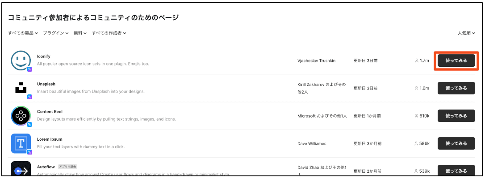
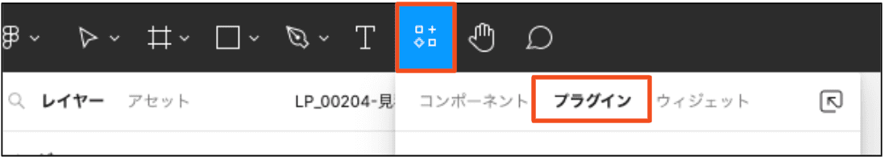
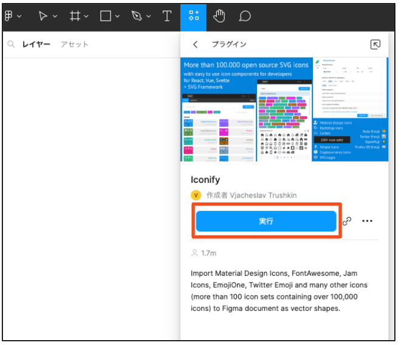
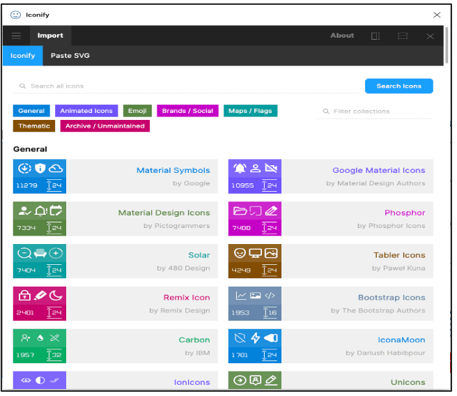
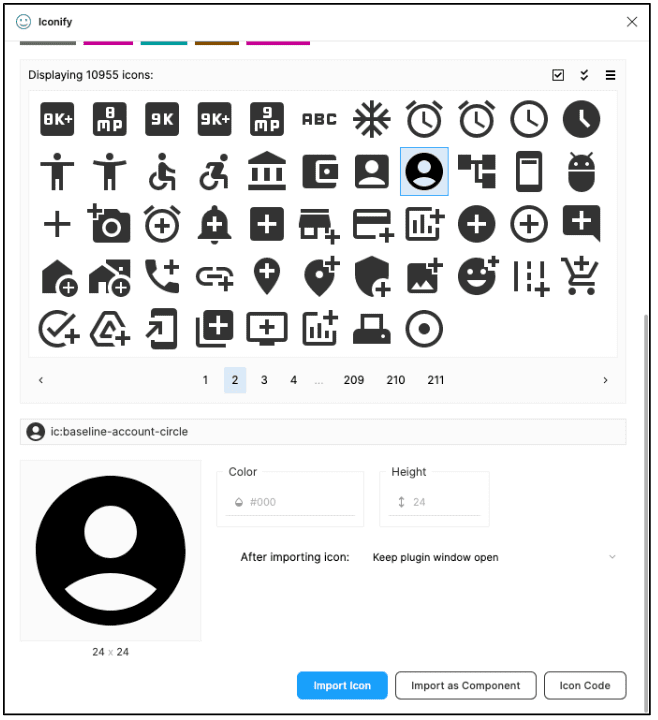

プラグインとは
Figmaのプラグインとは、Figma内でデザインを制作する際に利用できる拡張機能の総称です。
Figmaで最初から提供されていない機能、例えばUI Kitやアイコン、ダミーのテキストや画像等を使用することが可能です。
下記URLから探すことが可能です。
※アプリ内課金が必要なプラグインや有料版もあるため注意してください
ここでは実際に使用したプラグインや便利そうなプラグインを紹介します。
▶︎
プラグインの使い方を知りたい方は下記をチェックしてください☆
⬇︎
プラグインの使い方
プラグインの使用方法を説明します。とっても簡単なのですぐに使用できます。
方法
※UI kit等の場合はページが別タブで開きます
例）
●試しに「Iconify」からアイコンをFigmaのアートボードに入れてみます。
「Iconify」は様々なアイコンを入れることができるプラグインです。
各アイコンにはライセンスがあります。確認してから使用しましょう。
→コミュニティ検索からの場合、「Iconify」の使ってみるボタンをクリック
→ツールバーからの場合、リソースボタンをクリック＞プラグインをクリックし「Iconify」を検索
→「Iconify」の実行するボタンをクリック
→「Iconify」のモーダルが展開しました
→入れたいアイコンを選択し、importをクリック

→アートボードに入れることができました。
「Iconify」はアイコンのカラーも選択でき、コンポーネントでimportすることができました
再度同じプラグインを使用したい場合は、アートボードの何もない箇所で右クリック＞プラグイン＞最近使用したプラグインから選択。または、ツールバーからプラグイン＞最近使用したリソースから、実行ボタンをクリックして使用できます。
⬇︎
＼もっと詳しく／
プラグインの使い方をもっと詳しく知りたい！という方はUdemyの動画を視聴してください。
下記講座で詳しく説明してくれます☆